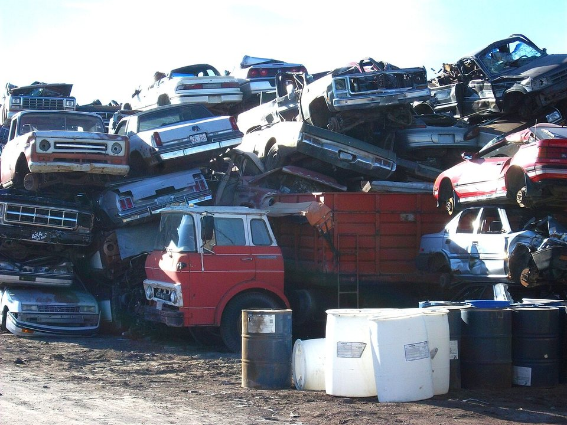
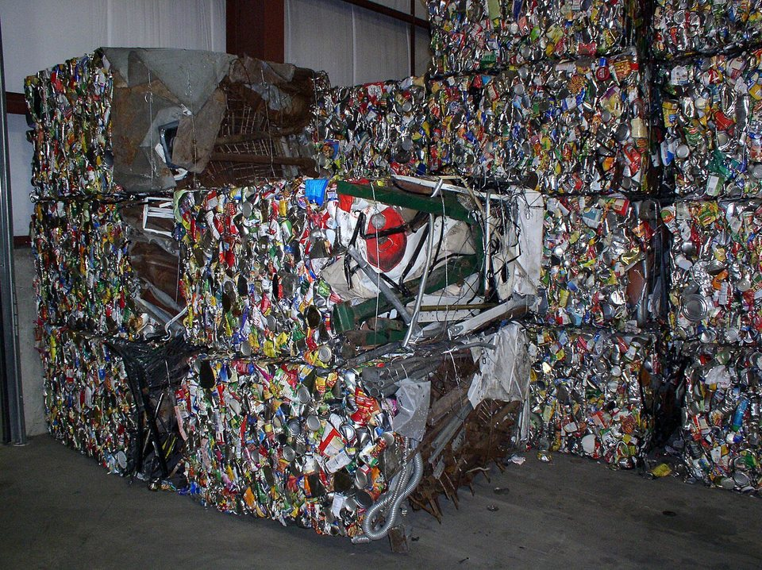
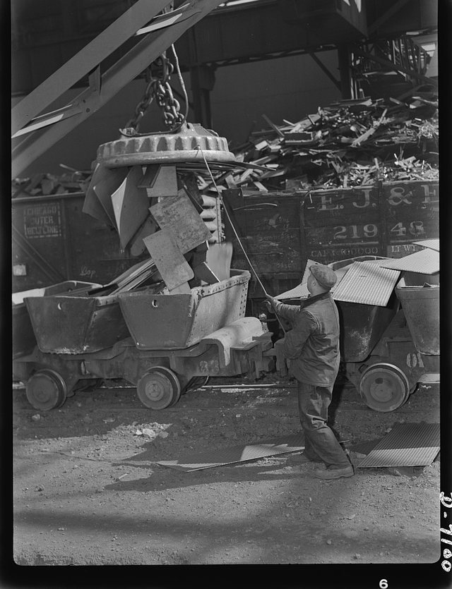
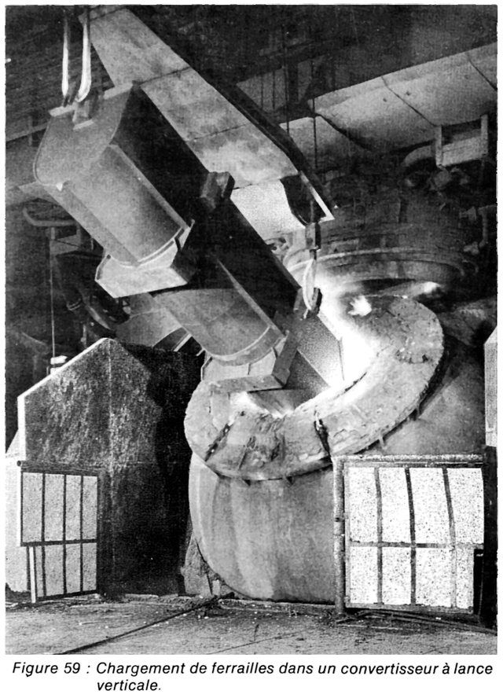

STEEL 101 · SCRAP PREP · 2026.10
廢鋼進爐之前：從廢料場到電爐料籃的檢查、破碎、分選與配料
鋼鐵潮流工作室 · 發布 2026.10.12

本期重點
上一課〈廢鋼從哪裡來〉談了廢鋼的規模與來源，也概略介紹處理流程。這一課把鏡頭拉近，沿著一車廢鋼進廠之後的路線，看它怎麼過檢查、減容、分選，最後配進料籃或廢鋼箱，才變成煉鋼爐裡能用的爐料。
- 先檢查，再處理。 門框式輻射偵測器是廢鋼場最主要的偵測手段；密閉的鋼瓶等容器也必須在入爐前挑出，否則進了破碎機或爐子都可能爆炸。
- 減容靠三種機器。 剪切、打包、破碎，把形狀與密度整理成鋼廠能接受的樣子；破碎料尺寸均勻、密度高，回收業者組織 BIR 指出電爐可以用到 80–90%。
- 分選決定乾淨程度。 磁選取出鐵，渦電流與感測器把銅、鋁等非鐵金屬分出去；但銅一旦熔進鋼水就去不掉。
- 最後靠配料與裝料。 殘留元素只能靠搭配 DRI、生鐵稀釋；裝料時輕重料分層，才能熔得快、少傷爐體，也少開幾次爐蓋。
流程總覽：一車廢鋼進廠之後
折舊廢鋼要變成鋼廠能直接投料的爐料，目標只有三個：尺寸合適、密度夠高、雜質夠少。下面十個步驟，前兩個是把關，中間五個是加工，最後三個是配料與入爐。實際流程依各廠設備而異，這裡是最常見的順序。
- 進場偵檢門框式偵測器掃描整車，異常車輛隔離
- 目視檢查挑出鋼瓶等密閉容器
- 分類堆置依來源、厚薄與品質分堆
- 剪切大型厚料切成可入爐尺寸
- 打包薄輕料壓成方塊，提高密度
- 破碎混合輕薄料打成拳頭大小碎片
- 分選磁選、渦電流、感測器分出雜質
- 配料依鋼種允許的殘留量搭配爐料
- 裝籃輕重料分層，裝入料籃或廢鋼箱
- 入爐電爐批次或連續加料；轉爐先裝廢鋼
第一關：進場檢查，輻射與密閉容器
廢鋼進廠的第一件事不是處理，而是檢查。檢查的對象有兩類：放射性物質，與密閉容器。
輻射：門框式偵測器是第一道防線
紐西蘭衛生部的指引指出，在入口設置門框式偵測器（portal monitor），監測進場貨物，是偵測廢鋼裡放射性物質的主要方式：超過預設門檻就會警報；貨車重新過一次，或以手持儀器確認，確認有放射源就把整車隔離，直到物品被找出並移除。
廢鋼裡的放射源，多半是「孤兒源」，也就是脫離監管的放射性物質。該指引列出的例子包括：量測儀表常含銫-137、鈷-60 或鎇-241，工業射線檢測用銥-192 或硒-75，另有含鐳-226 的夜光錶面。美國環保署（EPA）則提到，石油與天然氣工業的管線積垢含有天然放射性物質（NORM），也可能混入廢料。
偵測並非萬無一失。EPA 明說，監測「不保證能偵測到放射源」，廢鋼本身或放射源的外殼都可能把輻射遮住。放射源一旦被熔進爐裡，代價極高：EPA 記載，佛羅里達一座鋼廠熔掉一顆銫源，蒸氣進入排放控制系統，估計清理費用達 2,500 萬美元，除污與健康物理人員在酷熱中連續三週以上日夜作業。台灣 1980 年代的輻射鋼筋事件，已在〈廢鋼從哪裡來〉介紹，此處不再重述。
密閉容器：進了破碎機或爐子都會爆
另一類危險是密閉容器：瓦斯鋼瓶等密封容器。ISRI（美國廢料回收工業協會，現名 ReMA）的刊物引用業者估算：一只 2,000 psi（約 138 bar）的鋼瓶，所含能量接近 1.5 磅 TNT。同一篇文章提到，有業者的可燃氣瓶在破碎機裡爆炸，整條產線停了好幾天；該文並提到，據報導曾有卸閥時閥門飛出、造成員工死亡的案例。
即使是氮氣這類無毒氣體，也因為儲存壓力高而危險，閥門一斷，鋼瓶就會被氣體推著飛出去。看起來空的鋼瓶，還可能殘留氣體或其他物質。所以廢料場的做法是先「卸閥」（de-valving），洩壓並確認之後，鋼瓶才進入一般廢鋼流程。
第二關：減容，剪切、打包、破碎
廢鋼的天敵是體積。大塊構件塞不進爐，薄輕料又太蓬鬆，一個料籃裝不了幾噸，每爐就得多開幾次爐蓋。轉爐煉鋼的資料指出，處理方式依料型而定：超大件以剪切、火焰切割或氧氣燒割處理；薄板剪屑、沖孔料則以液壓機壓成包。太大、太重的料熔得慢，沒熔化的廢鋼會讓製程控制出問題。
| 設備 | 處理對象 | 成品 | 重點 |
|---|---|---|---|
| 剪切機（鱷魚剪、門式剪） | 厚板、型鋼、鋼軌、拆除鋼構等大型料 | 短料，尺寸可直接入爐 | 超大構件另以火焰切割或氧氣燒割 |
| 打包機 | 薄板剪屑、沖壓下腳料等輕薄鬆散料 | 方塊狀壓縮包 | 液壓壓縮提高堆積密度，減少加料次數 |
| 破碎機 | 報廢車、家電、混合輕薄料 | 拳頭大小的破碎料 | 同一條線上分出鐵與非鐵金屬，殘渣另外處理 |

破碎機：靠擺錘把車打成碎片
廢鋼破碎機是錘擊式（hammermill）：轉子上裝著重型擺錘，高速旋轉，把進料打碎。擺錘通常是四臂結構，磨損後可以翻面再用。Recycling Today 列出的規格：超大型破碎機的擺錘重約 950–1,200 磅（約 430–540 公斤），擺幅約 120 英寸（約 3 公尺）；標準機種擺幅約 98 英寸（約 2.5 公尺）。
進料包括整台或壓扁的報廢車（不含油箱）、家電，以及厚度不超過 1/4 英寸（約 6.4 毫米）的二級廢鋼；重型機種可處理輕型一級廢鋼，厚度可到 1/2 英寸（約 12.7 毫米）以上，也包括鑄鐵。進料由直徑約 36 英寸（約 0.9 公尺）的雙進料輥壓住送入。規劃產能時，業界以每立方英尺 70 磅（約 1.12 噸／立方公尺）的成品密度為基準。
錘擊式破碎機：馬力與每小時產量（噸／小時）
資料來源：Recycling Today〈Automobile Shredders〉的機型範例；原文單位為 tons／hour（美國業界慣例多指短噸，約 907 公斤），為總產出量。各機型實際產量依進料與廠房配置而異。
破碎料有明確規格。依 BIR 所引用的歐盟 27 國規格（E40 級），破碎料有 95% 的料任一方向不超過 200 毫米，其餘單件不超過 1,000 毫米；密度高於 0.9 噸／立方公尺；土、塑膠、非鐵金屬等不要的雜質要壓在 2% 以下，有的可低到 0.75%，礦物性雜質（steriles）低於 0.4%。BIR 同時主張，電爐可以用到 80–90% 的破碎料，加料時間可能縮短一半以上，產渣量可能比剪切料、打包料少一半以上，料場的搬運效率可高到兩倍。這些是回收業者組織的說法，鋼廠實際用量依鋼種與設備而異。
第三關：分選，把鐵和其他東西分開
破碎只是把車打成碎片，鐵、銅、鋁、塑膠、橡膠還混在一起。接下來一連串的分選設備，就是破碎線的後半段。下圖是簡化的流程，實際配置依各廠而異。手機上可左右滑動看全圖。
本站依 Recycling Today 與 Tomra 公開資料簡化繪製之示意圖；設備順序與數量依各廠而異。
| 技術 | 原理 | 分出什麼 |
|---|---|---|
| 磁選（鼓式、橫帶、磁頭滾筒） | 磁力吸住鐵磁性金屬 | 鋼鐵碎片與非磁性物分開；破碎線通常有一到三顆鼓式磁鐵 |
| 人工挑選 | 在輸送帶旁目視挑出 | 大件雜物、明顯的非鐵金屬 |
| 滾筒篩 | 依粒徑篩分 | 細粒碎屑，常見篩孔約 3/8 英寸（約 9.5 毫米）以下 |
| 渦電流分選 | 導電的非鐵金屬在變動磁場中感應出電流，被推離輸送帶 | 銅、鋁等非鐵金屬 |
| X 光穿透（XRT） | 依物體的「原子密度」判別 | 鋁與重金屬分開；鑄鋁、鍛造鋁與混合重金屬分開 |
| 電磁感測 | 偵測導電金屬的訊號 | 找出渦電流機漏掉的銅線，即使外面包著 PVC、PP、PE 或橡膠 |
非鐵金屬在回收業界有專屬名稱：破碎後混合的非鐵金屬稱 Zorba，混合的重金屬與不銹鋼則稱 Zurik；Tomra 的資料指出，感測分選能進一步產出銅、黃銅、鋁、不銹鋼等較單一的品項。對鋼廠來說，非鐵金屬被分出去，鋼的殘留銅就少一點；對回收業者來說，這些金屬本身也是收入。
但分選只能處理「分得開」的雜質。真正麻煩的是銅線纏在鋼件上、塗層與焊接物等難以完全分離的部分，這些一旦熔進鋼水，就留在鋼裡了。下一關靠配料來補救。
第四關：配料，殘留元素去不掉，只能稀釋
Midrex 的技術文章指出，銅、鎳、鉻、錫、鉬在煉鋼過程中不會被氧化，所以會留在鋼裡累積；文中形容，還沒有人找到經濟可行的方法把銅、錫從鋼水裡去除。銅、錫、鎳、鉬等元素會讓鋼變硬、軋延困難，並造成「熱脆」，影響表面品質（熱脆機制見〈廢鋼從哪裡來〉）。廢鋼本身還夾帶油、油漆、塑膠、橡膠、泥砂、玻璃與混凝土，這些會增加硫，或讓爐渣變多。
既然去不掉，就用「稀釋」。直接還原鐵（DRI）與生鐵幾乎不含這些殘留元素，把它們配進廢鋼，就能把煉出的鋼的殘留量拉下來。SteelOnTheNet 提到，這正是生產汽車外板等高要求產品時，電爐廠會搭配 DRI、生鐵的原因。
爐料裡的殘留元素含量（%）
資料來源：Midrex〈Diluent Effect of DRI〉所引用的殘留元素比較。Midrex 是 DRI 製程技術供應商，數字用來說明稀釋效果，並非所有廢鋼或 DRI 的通則。
煉出的鋼，含銅量範圍（%）
資料來源：同上。原文寫「slightly more than 0.20–0.30%」，這裡取約略值；加入 DRI 後，含銅量的高低與波動幅度都降低。
配料不只是「多放一點 DRI」。電爐廠要依鋼種可容許的殘留元素，混用不同等級的廢鋼：一般的做法是把低銅的新料用在要求高的鋼種，殘留較高的料留給要求較寬鬆的產品；各級廢鋼的規格與報價，反映的就是這種差別。
第五關：裝料，輕重分層、先後有序
電爐：料籃裡的廢鋼是一層一層排好的
ArcelorMittal 盧森堡 Differdange 廠與比利時研究機構 2008 年發表的論文指出，廢鋼要依尺寸分布與密度，一層一層排進料籃：目的是讓爐內盡快形成液態鋼池，同時保護爐壁與爐蓋，免受電弧輻射。一籃料最多可能有 20 層不同品質的廢鋼；該廠使用 100 噸級的料籃，雙爐殼的設計下，最多可同時備妥四個料籃。
難處在密度。論文估算整籃料的平均密度約 0.75 噸／立方公尺，實測落在 0.5 到 1.5 之間；輕薄的歐盟 E1、E8 級平均約 0.65，較重的料則在 1 上下或更高。輕料太多，料堆就堆得很高，料籃裝不了多少噸。該廠研究的主題，就是在裝籃前以掃描量測料堆高度，估算填充情況與品質。
料籃每裝完一籃就得掀開爐蓋，加料，再蓋回去，期間熱量不斷散失。美國礦務局（Bureau of Mines）早年的研究引用的數字是：40 短噸的電爐，每開一次爐蓋補料，約損失 489 度電的能量。這也是業界想把輕料壓成包、破碎成高密度料，以及改用連續加料的原因。




| 方式 | 作法 | 特點 |
|---|---|---|
| 電爐料籃批次加料 | 吊車把料籃移到爐頂，掀開爐蓋，廢鋼由籃底落入爐內 | 設備單純；每開一次爐蓋就散熱，料籃分層是關鍵 |
| 電爐連續加料（Consteel） | 廢鋼由慣性輸送機送進預熱隧道，爐氣逆向流過，邊預熱邊送入爐內 | 不必開爐蓋；廢鋼可預熱到約 400–600°C；輸送機寬度可達 4 公尺 |
| 轉爐廢鋼箱 | 先把廢鋼由廢鋼箱裝入轉爐，再倒入鐵水、吹氧 | 廢鋼占金屬裝料約 10–35%；輕料裝箱前端、重料在後；重料要靠近氧槍吹入點，才熔得快 |
預熱與連續加料：把爐氣的熱留住
歐盟創新中心（INCITE）的資料指出，Consteel 型電爐可達 350 噸爐容、每小時 450 噸產能；越南 Pomina 鋼廠在化學能不受限制的條件下，月平均電耗 321 度／噸。加拿大 Ivaco 軋鋼廠評估 Consteel 預熱時，用能源模型估算，廢鋼預熱溫度在 300 到 600°C 之間，可節省約 20–60 度／噸液態鋼；文獻回顧為 45–65 度，該廠申請書估計 38 度。這些數字依廠與條件而異，並非保證。
轉爐：廢鋼先進，鐵水後到
轉爐的順序和電爐相反：ISPATGURU 說明，廢鋼是最先裝入的材料，從廢鋼箱倒進轉爐，之後才倒鐵水、開始吹氧。輕料放在箱子前端、重料放在後端，輕料就會先落在耐火內襯上，緩衝重料的撞擊。廢鋼箱也要秤重，因為料型與總重都會影響終點控制。廢鋼是轉爐的冷卻劑，也是第二大的鐵源，用得多就少用鐵水；世界鋼鐵協會（worldsteel）的資料指出，高爐轉爐流程每爐料通常含 15–25% 的廢鋼，電爐可以到 100%。
這麼費工，值得嗎？
世界鋼鐵協會的說法是：每回收一噸廢鋼，可避免 1.5 噸二氧化碳排放，並少用 1.4 噸鐵礦砂、740 公斤煤與 120 公斤石灰石。鋼製品平均壽命約 40 年，短的像包裝用鋼只有幾週，長的如建築與基礎設施可達 100 年。廢鋼因此是一座龐大的「城市礦山」。但要把它變成穩定、乾淨、可預期的爐料，每一關都不能省：檢查擋下危險，減容讓它進得了爐，分選與配料讓它煉得出好鋼，最後的裝料則決定熔化是否順利、耗電多寡。
下一次看到廢鋼報價裡 HMS、破碎料、打包料的差別，不妨想想它們各自走過哪幾關：同樣是廢鋼，經過的處理不同，進了爐子的表現就不一樣。
延伸閱讀
資料來源
- Automobile Shredders（Recycling Today）
- Benefits of using shredded ferrous scrap in steel mills and foundries（國際回收局 BIR）
- Automated assessment of scrap quality before loading into an EAF（Baumert 等，Archives of Metallurgy and Materials 53(2)，2008）
- Diluent Effect of DRI – Steelmaking Superpower（Midrex）
- Metallics Residual Levels（SteelOnTheNet）
- Enhanced EAF steelmaking through continuous charging, scrap preheating and electromagnetic stirring（歐盟 INCITE）
- Innovative Energy Conservation through Scrap Pre-heating in an Electric Arc Furnace（Dicion，ACEEE 2013）
- Electric Arc Furnace Steelmaking using Scrap（美國礦務局研究，經 911Metallurgist 轉載）
- Materials needed for Steel Production in Basic Oxygen Furnace（ISPATGURU）
- Radioactive material in scrap metal recycling（紐西蘭衛生部）
- Contaminated Scrap Metal（美國環保署 EPA）
- Turning Risk into Reward（ISRI，2010 年 3/4 月）
- Post Shredder & Non-Ferrous Metals sorting（Tomra）
- Scrap use in the steel industry（worldsteel 事實清單，2021 年 5 月，由 SAISI 網站轉載）
內容僅供產業資訊參考，不構成投資建議。新聞版權屬原出處所有。